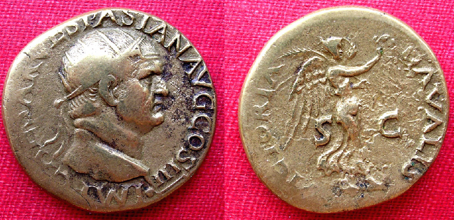

도시와 사회 · 교통과 기반시설
로마의 곡물 배급 — 거대한 도시는 누가 먹여 살렸을까
아노나를 떠받친 항구와 선박, 계약과 황제의 정치

황제가 곡물을 베푼다는 이미지는 단순해 보인다. 하지만 로마에서 배급할 곡물은 궁전에서 저절로 생기지 않았다. 먼 지역의 생산과 바다의 운송, 항구의 관리와 공급 계약이 이어져야 도시의 먹거리가 되었다. 아노나라고 불린 공적 곡물 공급을 따라가면 도시의 생활과 제국의 권력이 같은 선박과 창고에 기대고 있었음을 알 수 있다.
01. 큰 도시의 먹거리는 성벽 밖에서 왔다
도시 인구가 소비하는 곡물을 가까운 들판에서만 충분히 공급하기는 어려웠다. 로마는 이집트와 시칠리아, 사르데냐 등 여러 지역과 연결되었다. 한 도시의 식탁은 제국 여러 곳의 농업과 교역에 기대었다.
수도가 강력하다는 말에는 그곳으로 자원이 모인다는 뜻도 포함된다. 생산지와 소비지가 떨어져 있으면 두 장소를 잇는 길이 생활을 좌우한다. 로마의 규모는 건물과 인구만이 아니라 멀리서 식량을 가져오는 능력으로 유지되었다.
모든 공급지를 같은 역할을 하는 한 덩어리로 볼 수는 없다. 시기와 경로에 따라 로마가 의지하는 생산지의 비중은 달라질 수 있었다. 여러 곳을 잇는 체계가 있었다는 사실은 중요하지만, 한 지역이 언제나 로마 전체를 혼자 먹여 살렸다는 뜻은 아니다.
02. 곡물을 실은 배는 도로와 다른 규모를 다루었다
무겁고 양이 많은 물자를 먼 곳에서 옮길 때 바닷길은 중요한 이점이 있었다. 도로망이 유명한 로마였지만 곡물의 이동을 도로만으로 설명할 수는 없다. 지중해의 항로와 배가 수도의 소비를 가능하게 했다.
해상 운송에도 위험과 변수가 있었다. 배가 있어도 항구와 하역, 보관과 다음 구간의 이동이 이어지지 않으면 곡물은 소비자에게 닿지 못했다. 물류는 한 번의 긴 항해가 아니라 여러 단계를 끊기지 않게 잇는 일이었다.
바닷길의 효율은 자연이 공짜로 제공한 완성품이 아니었다. 선박을 유지하고 항구에서 하역하며 운송의 약속을 지키는 조직이 있어야 이용할 수 있었다. 지리적 이점과 그 이점을 실제 공급으로 바꾸는 능력은 함께 필요했다.
03. 오스티아는 도시와 바다 사이에 있었다
티베르강 하구의 오스티아와 로마 주변의 항만 체계는 바다에서 온 물자를 수도로 이어 주었다. 로마의 번영을 내륙의 광장과 신전에서만 보면 이런 중간 공간의 역할이 잘 보이지 않는다.
항구는 곡물을 내려놓는 빈 장소가 아니었다. 선박과 노동, 보관 시설과 거래가 만나는 곳이었다. 수도의 생활을 안정시키려면 물건이 도착했는지뿐 아니라 그다음 단계로 이동할 수 있는지도 관리해야 했다.
04. 배급을 위한 전담 관리가 필요했다
공적인 곡물 배급은 공화정 후기부터 있었고 아우구스투스 시대에 중요성이 더 커졌다. 황제는 공급을 맡을 전담 관리인 프라이펙투스 아노나이를 두었다. 먹거리는 도시의 중요한 행정 과제가 되었다.
이 관리와 실무 조직은 공급자와 계약을 맺고 항만과 시장의 문제를 다루었다. 사기를 단속하는 일도 공급의 일부였다. 충분한 곡물이 있다는 사실과 그것이 정해진 체계를 통해 제대로 도달한다는 사실은 별개의 관리 문제였다.
이 체계를 오늘날의 부처 이름 하나로 바꾸어 부르면 범위가 잘 드러나지 않는다. 공급 계약을 맺는 일과 항구의 흐름을 살피는 일, 시장의 부정을 다루는 일이 연결되어 있었다. 먹거리는 생산이 끝난 뒤에도 행정의 대상이었다.
05. 선주는 보상을 받았고 나중에는 의무를 졌다
곡물을 운송한 선주 집단인 나비쿨라리이는 국가의 감독과 계약에 연결되었다. 공급에 참여하면 다른 공적 의무를 면제받는 등의 혜택이 있었다. 국가가 모든 배를 직접 움직이지 않더라도 민간 운송 능력을 공적 목적에 묶을 수 있었다.
하지만 이 관계는 고정되어 있지 않았다. 후대에는 통제가 강화되어 곡물 공급 계약이 강제되는 방향으로 변했다. 같은 공급 체계 안에서도 참여를 유도하는 혜택과 벗어날 수 없는 의무 사이의 비중이 달라졌다.
운송자의 의무가 강화된 변화는 아노나가 한 번 정해진 제도로 영원히 유지되지 않았음을 보여 준다. 아우구스투스 때의 조정과 수백 년 뒤의 강제는 구별해야 한다. 긴 로마 제국사를 단일한 배급 방식으로 압축해서 읽을 수 없는 이유다.
06. 황제의 관대함에는 정치적 효과가 있었다
곡물을 공급하는 일은 사람들을 먹이는 동시에 통치자의 이미지를 만들었다. 아노나를 황제와 연결한 동전과 표현은 먹거리의 안정을 개인의 관대함으로 보이게 했다. 복잡한 공급망의 결과가 눈에 보이는 통치자의 공적으로 모였다.
실제로 곡물을 생산하고 배를 운항하며 항구에서 일한 사람은 훨씬 많았다. 황제의 이미지를 읽을 때는 이들의 노동이 어떻게 뒤로 물러나는지도 살펴야 한다. 공적 공급과 정치적 홍보는 같은 제도 안에 함께 있었다.
07. 먹거리가 흔들리면 권력도 시험받았다
곡물 부족은 단순한 장사상의 불편을 넘어 도시의 불안과 연결될 수 있었다. 서기 190년의 식량 위기와 소요처럼 공급의 실패는 정치적 긴장이 드러나는 계기가 되었다. 생활의 기초를 책임진다는 주장은 실패했을 때 책임의 근거가 되기도 했다.
로마의 곡물 배급을 오늘날의 모든 주민을 위한 보편 복지와 같게 볼 수는 없다. 다만 큰 도시가 공공의 조정과 먼 지역의 자원에 기대었다는 사실은 분명하다. 황제의 손에 곡물이 있는 그림 뒤에는 지중해를 건너는 사람들과 제도가 있었다.
이야기의 바탕이 된 자료
- OpenStax, World History Volume 1 — The Roman Economy: Trade, Taxes, and Conquest ↗확인일 2026-11-13
이집트·시칠리아·사르데냐/해상운송과 오스티아/아노나·전담 관리·계약/선주 혜택과 후대 강제/정치적 이미지/190년식량위기. 이미지 황제명 충돌은 미확정 처리, 모든 주민 복지 주장 제외.